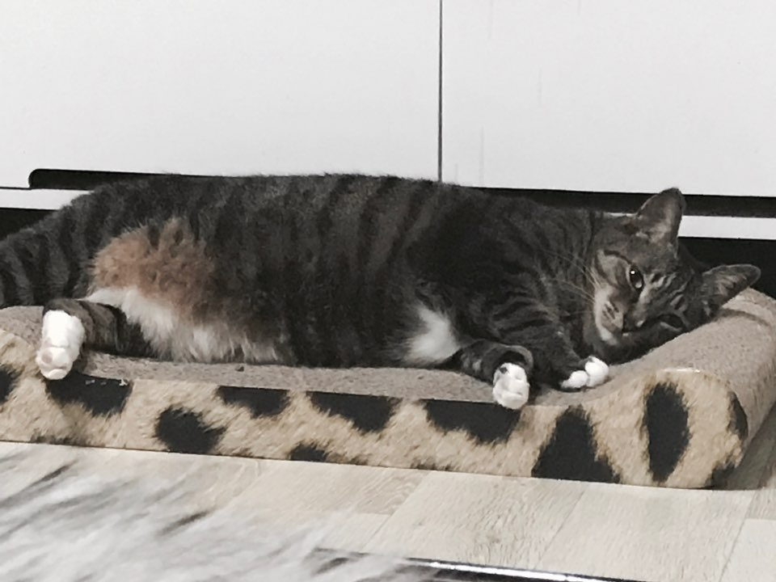
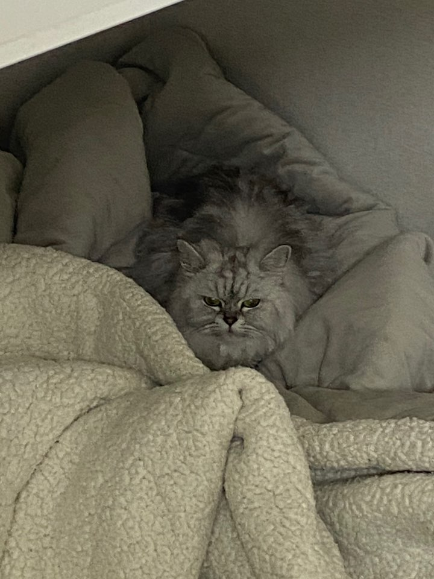

MY FAVORITE
MY FAVORITE은 내가 좋아하고 사랑하는 것들에 대한 기록이다. '정말 이게 없다면 내가 살아갈 수 있을까?'라는 의문이 들 정도로 사랑하는 것들이다.
세상에 아름다운 것들은 많다. 일상의 아름다움을 사랑할 줄 알아야한다.
❤🥰😍😘❤🥰😍😘
❤🥰😍😘❤🥰😍😘
MY FAVORITE은 내가 좋아하고 사랑하는 것들에 대한 기록이다. '정말 이게 없다면 내가 살아갈 수 있을까?'라는 의문이 들 정도로 사랑하는 것들이다.
세상에 아름다운 것들은 많다. 일상의 아름다움을 사랑할 줄 알아야한다.
❤🥰😍😘❤🥰😍😘
❤🥰😍😘❤🥰😍😘

나비는 열악한 시골 케이지 안에서 처음 봤다. 그 당시에 저 아이가 만약 계속 여기에 있다면 오래 살지 못할 것 같았다. 나는 이 아이를 꼭 집으로 데려오고 싶었고 어린 나이에 엄마의 반대에도 불구하고 무작정 집으로 데려온 아이다. 평생 같이 살자^^7

미르는 나비를 데려온 지 1년 뒤에 아는 사람으로부터 입양했다. 미르는 처음부터 엄청 작았고 지금도 작다. 가족 중에 나를 제일 좋아하는 미르다. 언제 봐도 사랑스럽다. 가끔 까탈스럽긴 하다. 그래도 귀여우니 봐준다. 평생 같이 살자^^7
나는 음악을 어렸을 때부터 유독 좋아했다. 어렸을 때 엄마랑 차를 타고 다니며 항상 성시경의 "거라에서"를 불렀다. 항상 음악을 사람들이 왜 그토록 사랑할까 생각을 하는데 내가 사랑하는 이유는 예전에 듣던 노래를 한참이 지나 듣다보면 그때의 향수가 느껴져 사람의 마음을 움직이는 힘이 있는 것 같다.
나는 스트레스를 받거나 화가 나는 일 또는 행복한 일 이 있으면 길거리 풍경도 아름답게 보인다. 풍경은 내 마음을 참 쉽게 흔들어 놓는다. 어딜 가든 풍경사진은 꼭 찍는게 내 일상이 되어버렸다. 우리 주변에도 이렇게 많은 아름다움이 있다는 것을 잊지 말고 살아가자.